super-hiko14.me / diary
365日だけ綴られる— / Written only for 365 days—
Diary.
365日一行日記
2026.04
- 17 銀行バグ多すぎｲｲｲｲｲｲｲｲ
- 16 高級ジェネの銀行完成(バグだらけとは知らずに... by 17日のSuper Hiko14)
- 15 高級ジェネ怒涛のアップデート
- 14 まだ火曜日だけどもう金曜日でいい気がする
-
13
猫はいつ見てもかわいい。

- 12 新 高級ジェネ™ 3、総参加人数3000人突破!!
- 11 =)
-
10
Neko in danbo-ru

- 9 ｸﾞｴｰﾏｲｸﾗｱｱｱ
- 8 【朗報】オープンチャットに「自慢雑談」が追加
- 7 ツミキappのアップデート準備2
- 6 ツミキappのアップデート準備
-
5
Coco壱番屋を久々に食べた。美味しかった^^

- 4 帰宅!!!!!!!!!!!!
- 3 あああ。
- 2 ドンキに見たことあるものが...????
- 1 エイプリルフールだね この日だけsnsの名前をUnder Hiko18888にしたぜ 塾の先生とめっちゃ気が合って1時間雑談してたZE
2026.03
- 32 俺の3月はまだ終わってねえ!!!!※エイプリルフール
- 31 筋肉痛★
-
30
~水族館へ~歩きすぎてへとへと 足痛い


- 29 いつもはホットココアのところを、今日はアイスココアを飲んでみた。うっま
- 28 今日はホットココアを。喫茶店で。片手に小説、もう片手にココアの環境は至福だった。小説とココアは偉大だ。ホットしたね
- 27 いつもはホットココアのところを、今日はアイスココアを飲んでみた。うっま
- 26 少し長い遠出
- 25 終業式/離任式。((ねみー))
- 24 中学一年生として最後の給食。転勤する先生の最後の授業。
- 23 てすとしんだ^^
- 22 新 高級ジェネ 3 Ver.2.0の計画が大体決まった。あはは
- 21 文綴のアップデートをした。やったね
- 20 ofuseを整備した。行き当たりばったりでgdgd
- 19 文綴のバグに悩まされ中
- 18 理科の授業でカルメ焼きを作った(?)。失敗! 残念!
- 17 ろっかぁの[無法地帯]鯖で歴史的建造物(?)を残した。賞賛すべｋ
- 16 非常に眠い
- 15 作りたいものを作ろうとしたら失敗しちゃった もういいや
- 14 ^^ゴロゴロ^^
- 13 3年生が来なくなっても学校はある。虚無感
- 12 眠かった。卒業式だからって片手に水筒ポッケに筆箱と本で来たら一番大事な家の鍵を忘れて学校で1時間滞在させてもらった。不運だ
- 11 明日は卒業式(卒業しません)。思ったけど総練習なんかしたら本番の感動薄くなるんじゃn(((((
- 10 パインアメ5個食べた。1日で。おいしかったなあ
- 09 朝起きたら自鯖荒らされてた。ｳﾝﾅﾝﾃﾞｪ???
- 08 眠い!
-
07
サ イ ト 内 フ ッ タ ー ア ッ プ デ ー ト¡ お寿司食った。おいしかった


- 06 ろっかーさばが荒らされてた。荒らしは何を目的としている?
- 05 あああ(雑)。
- 04 どっと疲れがある
- 03 ひな祭りだね。うんうん
- 02 やった!!! 抽選でRPG maker Uniteが当たった!!! ｳﾚｼｲﾈ
- 01 3月だね。はや
2026.02
- 28 高級ジェネでLEGEND発売!!
- 27 金曜日。1日祝日が入るだけで3日は平日が削れた感覚だ
- 26 テストが返ってきた。燃え尽きたぜ。真っ白にな
-
25
魔法少女ノ魔女裁判のC(omplete)O(riginal)S(ound)T(rack)が届いた。神

- 24 3連休後の学校。普通にだるかった
- 23 お出かけ。NotionAIで遊んだ
- 22 特にないかも
- 21 Github EducationからNotion教育向けプラスプランに入れることを知った。すごい便利そうだったからNotionを本格的に使おうと思った
- 20 NEW CPUクーラーを取り付けた。アフォ疲れたけど無事成功して快適になった。やったね
- 19 学校友達とテスト前の勉強通話をした。勉強なんかほぼしてなかった
- 18 NEW CPUクーラーが届いた。組み立てはまた今度
- 17 日常組が新しいスタッフを募集しているのを見た。応募条件18歳以上だった
- 16 万年筆に興味を持った。
- 15 PCがなんか重いからcpuクーラーを触ってたらケガした。ゴミ
- 14 ...jene.github.io/tool/からtools.super-hiko14.comに移行した。バカ大変
- 13 友達が萎えていたから色々話した。うん
- 12 ドメイン/フォルダ整理した。ﾔｳﾞｧｲくらい大変
- 11 祝日ということでsuper-hiko14.comを買いに行った。1万で5年ぐらいだぞ
-
10
kentotem(kentoトーテム)を作った。もちろん自分のも

- 9 super-hiko14.meというドメインを1年間分無料でゲットした。やったね